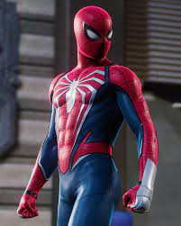

Historia de Marvel's Spider-Man
En esta trilogía, seguimos a Peter Parker en una Nueva York vibrante y llena de peligros. En el primer juego, enfrenta al Señor Negativo y la amenaza del grupo Inner Demons, mientras que en el segundo juego, Miles Morales toma protagonismo en su propia historia. Finalmente, en Marvel's Spider-Man 2, Peter y Miles deben unir fuerzas para derrotar a Kraven el Cazador y la amenaza simbiótica de Venom.
Biografía de Peter Parker

Peter Parker en la saga de videojuegos es un héroe experimentado que lleva 8 años siendo Spider-Man. Trabaja con el Dr. Otto Octavius hasta que su mentor se convierte en el Doctor Octopus. A lo largo de los juegos, Peter enfrenta grandes pérdidas, pero también forma alianzas, como con Miles Morales, quien se convierte en su aprendiz.
Detalles del Traje

El traje avanzado de Peter Parker en los juegos tiene un diseño moderno con el icónico logo blanco. También cuenta con mejoras tecnológicas, como los brazos mecánicos en la versión de Spider-Man 2. Además, a lo largo del juego, se pueden desbloquear múltiples trajes icónicos del universo Marvel.
Sorteo: Gana una PS5 con Marvel's Spider-Man 2
¡Participa en nuestro sorteo para ganar una PlayStation 5 con Marvel's Spider-Man 2!
00 días 00 horas 00 minutos 00 segundos